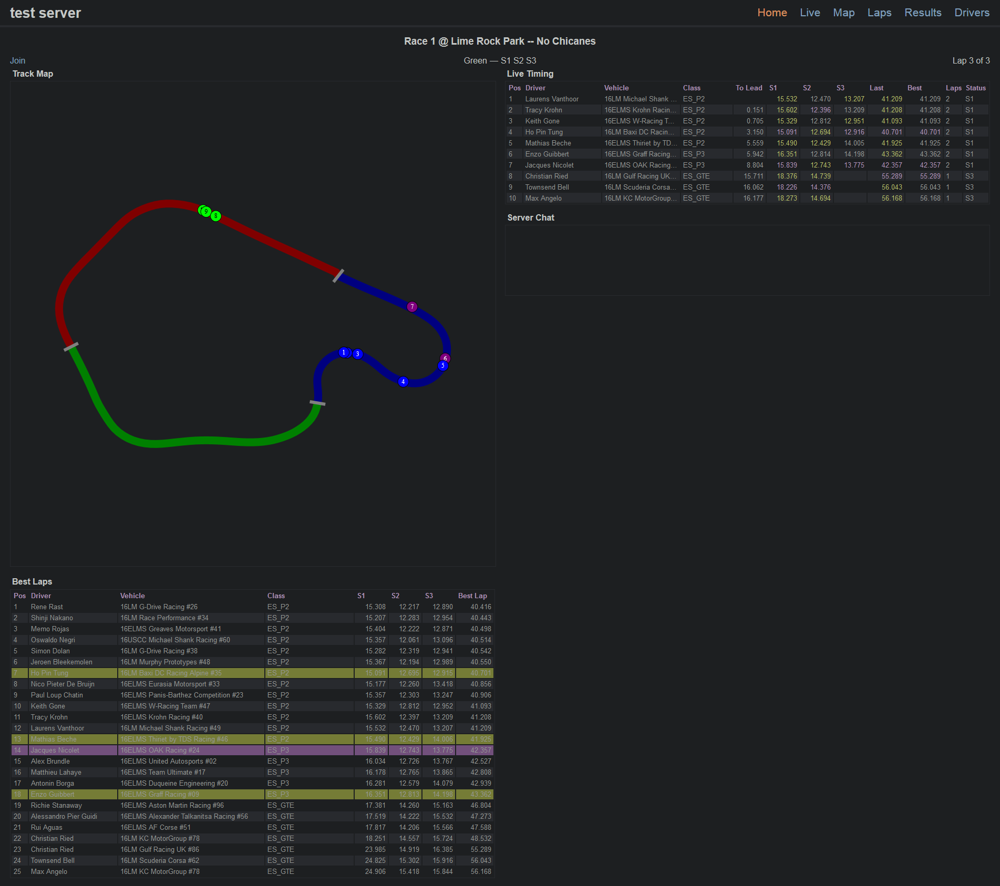
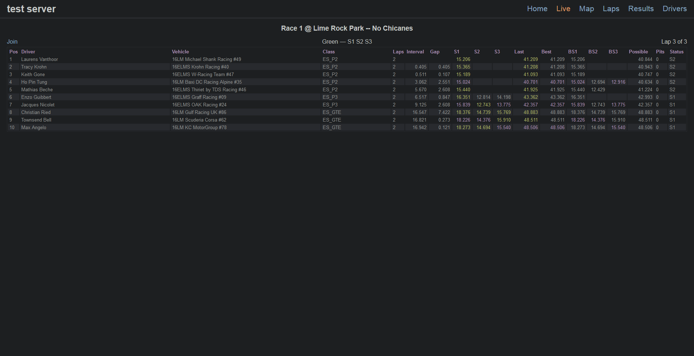
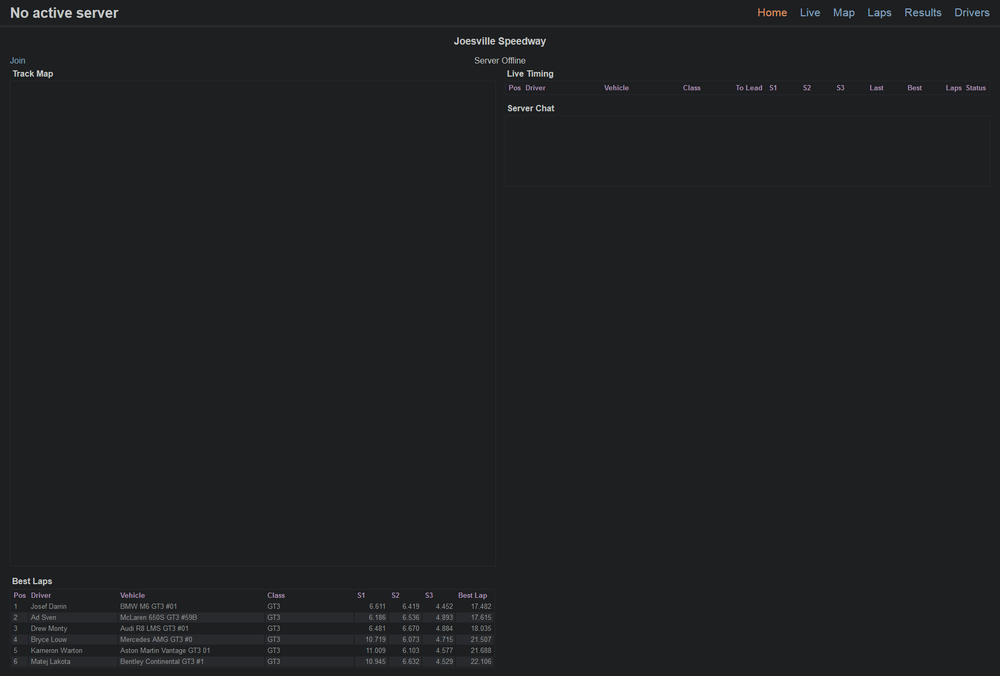

reads and sends the lastest results xml file over TCP
ideally networking over loopback only but can send data elsewhere
examples

rf2livetiming in actionbunch of bots loading inbasic live timingmap generationeavesdropping

extended live timing

rf2livetiming not in action